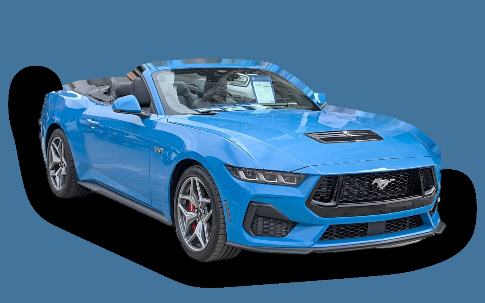

What does a Ford Mustang cost per month?
A 2026 Ford Mustang costs about SEK 11,387 a month, all in.
SEK 11,387per month, 2026 model
SEK 698,300price, 2026 model
SEK 698,300new from
Evalue grade (2026)


Monthly cost by model year
| Model year | Version in the calculation | Price | Per month | Grade |
|---|---|---|---|---|
| 2026 | GT 5.0 V8 446, GT | SEK 698,300 | SEK 11,387 | E |
Based on 5 years of ownership and 12,500 km a year, with fuel prices from 2026-10-22. The monthly cost includes depreciation, fuel, servicing and repairs, insurance and road tax.
How the cost splits for a 2026 car
- Depreciation: SEK 5,755/mo
- Fuel: SEK 2,672/mo
- Servicing and repairs: SEK 524/mo
- Insurance: SEK 935/mo
- Road tax: SEK 1,501/mo
Used prices in ads
| Model year | Median price | Ads | Typical mileage |
|---|---|---|---|
| 2025 | SEK 599,000 | 15 | 21,000 km |
| 2024 | SEK 634,900 | 4 | 10,000 km |
The median price in Swedish ads by model year in October 2026 (source: AutoUncle, BilKoll). Ad prices are asking prices, and the final price may be lower.
Engines and versions
| Engine | Fuel | Power | 0–100 km/h | Consumption (WLTP) | Range | Model years | Extra cost |
|---|---|---|---|---|---|---|---|
| GT 5.0 V8 446 | Petrol | 446 hp | 4.9 s | 12.4 l/100 km | – | 2024– | – |
- Trim: GT, Dark Horse (+SEK 130,000)
Facts
- Body
- Sports car
- Model years
- 2024–
- New from
- SEK 698,300
- Boot
- 367 litres
- Euro NCAP
- not tested
- New-car warranty
- 3 years
- Reliability
- 3 of 5
- Comprehensive insurance, estimate
- SEK 12,700/yr
- Servicing, estimate
- SEK 5,200/yr
Pros and cons
Pro
Classic V8 sports car with a rear seat.
Con
Very high fuel use and a very high malus tax.
Similar cars
 Porsche 911SEK 11,271/mo as a 2023 model
Porsche 911SEK 11,271/mo as a 2023 model BMW M2SEK 8,293/mo as a 2023 model
BMW M2SEK 8,293/mo as a 2023 model BMW Z4SEK 4,821/mo as a 2023 model
BMW Z4SEK 4,821/mo as a 2023 model Audi TTSEK 4,278/mo as a 2020 model
Audi TTSEK 4,278/mo as a 2020 model Mazda MX-5SEK 3,109/mo as a 2023 model
Mazda MX-5SEK 3,109/mo as a 2023 model
Updated 2026-10-27 · ad data Oct 2026